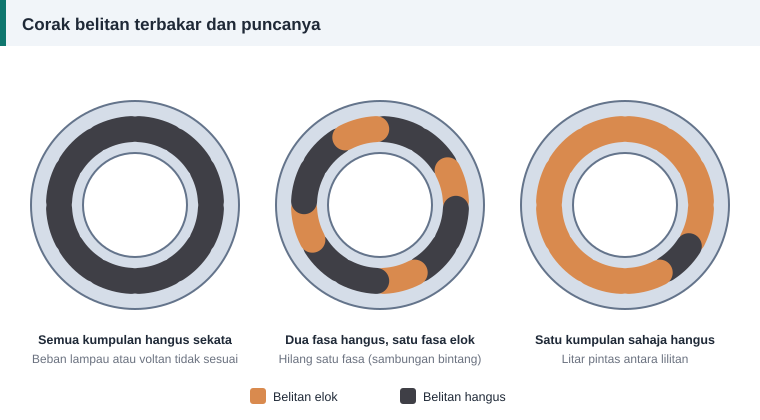

Ujian dan diagnosis
Mengapa Belitan Motor Terbakar: Lapan Punca dan Cara Mengenalnya
Melilit semula motor tanpa mencari punca kerosakan samalah seperti menukar fius tanpa mencari litar pintasnya. Sebelum belitan lama dibuang, baca dahulu apa yang ia ceritakan.


Tiga corak utama
Semua kumpulan hangus sekata
Seluruh belitan berwarna gelap sama rata. Haba datang daripada semua fasa serentak. Puncanya mungkin beban lampau berpanjangan, voltan terlalu rendah atau terlalu tinggi, rotor tersekat, terlalu kerap dihidupkan, atau penyejukan terhalang.
Dua fasa hangus, satu fasa elok
Ini tanda klasik kehilangan satu fasa bekalan pada motor sambungan bintang. Dua fasa yang tinggal membawa arus berlebihan, manakala fasa ketiga tidak membawa arus. Pada motor sambungan delta, coraknya terbalik: satu fasa hangus dan dua fasa elok.
Satu kumpulan atau satu gegelung sahaja hangus
Kerosakan setempat seperti litar pintas antara lilitan, antara gegelung atau ke teras. Puncanya selalunya enamel tercalar, getaran, pencemaran atau pusuan voltan.
Lapan punca dan pencegahannya
| Punca | Petunjuk | Pencegahan |
|---|---|---|
| Beban lampau | Hangus sekata; arus melebihi plat nama | Tetapkan geganti beban lampau pada arus plat nama |
| Hilang satu fasa | Dua fasa hangus (bintang) atau satu fasa (delta) | Geganti kehilangan fasa; periksa fius dan penyentuh |
| Voltan tidak seimbang | Satu fasa lebih gelap daripada yang lain | Ukur ketiga-tiga voltan dan betulkan bekalan |
| Voltan terlalu rendah atau tinggi | Hangus sekata | Semak voltan di terminal motor semasa berbeban |
| Rotor tersekat | Hangus teruk dan sekata dalam masa singkat | Periksa beban dan galas; guna perlindungan yang betul |
| Penyejukan terhalang | Hangus sekata; kipas rosak atau sirip tersumbat | Bersihkan sirip, ganti kipas, jaga pengudaraan |
| Lembapan dan pencemaran | Kesan jejak arka; kerosakan ke teras | Kepungan yang sesuai; pemanas antipemeluwapan |
| Litar pintas antara lilitan | Satu gegelung hangus | Pemasukan gegelung yang teliti; varnis sempurna |
Jangan lupa bahagian mekanikal
Laporan EASA/AEMT memetik taburan punca kegagalan motor yang menunjukkan lebih separuh kegagalan bermula daripada galas, manakala belitan stator hanya kira-kira 16%. Belitan yang hangus mungkin mangsa, bukan punca. Galas yang haus membolehkan rotor bergesel dengan stator, dan galas yang tersekat membebankan motor.
Soalan untuk pemilik motor
- Apakah beban yang dipacu, dan adakah ia berubah baru-baru ini?
- Berapa kerap motor dihidupkan dalam sejam?
- Adakah pelindung terpelantik sebelum kegagalan?
- Adakah motor lain pada bekalan yang sama turut bermasalah?
- Bila kali terakhir galas diservis?
Selepas lilit semula
Ukur voltan dan arus ketiga-tiga fasa di tapak, bukan hanya di bengkel. Tetapkan semula geganti beban lampau mengikut plat nama. Jika punca asal tidak dibetulkan, belitan baharu akan mengalami nasib yang sama. Urutan semakan ada dalam ujian selepas lilit semula.
Rujukan dan bacaan lanjut
Artikel berkaitan
Ujian Selepas Lilit Semula: Rintangan, Keseimbangan dan Arus Tanpa Beban
Motor yang baru dililit semula mesti lulus beberapa ujian sebelum diserahkan. Ikuti urutan daripada pemeriksaan visual hingga arus tanpa beban dan ketahui maksud setiap bacaan.
Kelas Penebat Motor A, E, B, F dan H Dijelaskan
Kelas penebat pada plat nama menetapkan suhu tertinggi yang boleh ditanggung belitan. Fahami had setiap kelas, kenaikan suhu dibenarkan dan pilihan bahan semasa lilitan semula.
Lilit Semula atau Ganti Baharu? Cara Membuat Keputusan
Kos baik pulih hanya sebahagian daripada kiraan. Bandingkan harga, keadaan teras, kecekapan dan kos elektrik sepanjang hayat untuk memutuskan sama ada motor patut dililit semula.